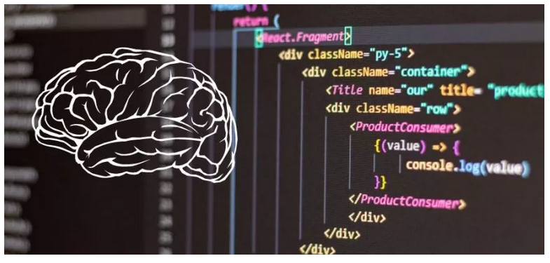

O que é Pensamento Computacional?

O termo pensamento computacional foi utilizado pela primeira vez por Seymour Papert, na década de 80. A ideia era nomear o conjunto de habilidades e conhecimentos da ciência da computação que poderiam ser utilizados em diversas áreas do cotidiano.
Portanto, não estamos falando apenas sobre programação, cenário digital, internet, etc. O objetivo é realmente integrar a tecnologia ao conhecimento humano, de forma que ambos se complementem para gerar mais conhecimento, capacidade criativa, estratégica e crítica.
Isso, claro, no cenário atual, é fundamental para auxiliarmos na adaptação do aluno a uma sociedade cada vez mais inovadora, complexa e digital. Como?
Com a base computacional podemos identificar problemas e solucioná-los utilizando basicamente quatro pilares. São eles:
1. Decomposição
Quando o sistema computacional precisa solucionar um problema complexo, a primeira fase é identificá-lo e, posteriormente, dividi-lo em processos mais simples. Como se tivéssemos uma equação de segundo grau e, para resolvê-la, subdividimos ela em equações de primeiro grau.
O mesmo pode ser aplicado em outros problemas do cotidiano, com a finalidade de facilitar a resolução.
2. Reconhecimento de padrões
Da mesma forma que repartir um problema complexo em vários simples, a identificação de padrões também funciona como um facilitador. É exatamente esse o segundo pilar do pensamento computacional.
A ideia é conseguir visualizar pontos comuns tanto no próprio problema, como em outras soluções que já encontramos.
3. Abstração
Hoje, o volume de informações, dados e conhecimento que temos acesso é extremamente positivo para o desenvolvimento pessoal e da sociedade. Mas você já deve ter notado que muitas vezes há um excesso que dificulta a visualização do que realmente importa, não é mesmo?
Dentre as habilidades dos processos computacionais, percebemos que, para solucionar problemas, as máquinas identificam e focam em itens realmente relevantes. Deixando de lado, portanto, informações que não agregam à solução.
Por isso, o terceiro pilar do pensamento computacional trata da abstração. A ideia de filtrar o conteúdo recebido, de maneira a eliminar o excesso de informação irrelevante.
4. Algoritmos
Por fim, com todos os pilares anteriores, é possível identificar e criar regras para a resolução de problemas complexos. O último pilar do pensamento computacional é, portanto, a construção de algoritmos que, além de solucionar a questão estudada, também possibilitam a criação de um banco de soluções replicáveis.
Como você pode perceber estamos falando exatamente do modus operandi do sistema computacional. Trazendo, portanto, as habilidades e métodos para além do digital.
Resumidamente, no pensamento computacional, nós identificamos o problema, dividimos ele, criamos padrões e, por fim, solucionamos com o uso de lógica.
Importância de desenvolver o pensamento computacional na escola
Preparar o aluno para ser um profissional do futuro
O futuro é digital, inovador, criativo e complexo. O pensamento computacional age como um meio para que a criança se adapte mais rapidamente a esse cenário. Além, claro, de desenvolver conhecimentos e habilidades digitais para entrar e se destacar no mercado de trabalho.
Estimular o pensamento crítico
O incentivo ao aprender a fazer e aprender a aprender é uma das vantagens mais importantes do pensamento computacional. Afinal, o indivíduo passa a desenvolver seu próprio método de busca e absorção do conhecimento.
E começa a ver a teoria sendo realmente aplicada no seu cotidiano, tornando o estudo mais dinâmico, atrativo e real. Essa independência no aprendizado também possibilita que ele desenvolva um pensamento crítico sobre o conhecimento que recebe.
Auxiliar no desenvolvimento da capacidade de resolução de problemas complexos
O pensamento computacional é normalmente aplicado em matérias de exatas, relacionadas a cálculos, lógica e resolução de problemas. Mas não se trata de uma aplicação restrita.
Afinal, em nosso cotidiano é muito comum o surgimento de problemas complexos, que podem ser resolvidos mais facilmente quando transformamos em questões menores. Ou quando identificamos padrões e ignoramos elementos que não são relevantes para aquela solução.
Sim, estamos falando de alguns dos pilares do pensamento computacional. Percebe como essas etapas também podem ser extremamente úteis em diversas situações complexas?
Com a organização e a estruturação do PC nossa capacidade de resolução passa a ser muito semelhante a utilizada pelas máquinas. Facilitando, assim, a identificação, compreensão e resolução de diversos problemas!
Vídeo 1
Vídeo 2
Exercícios de Fixação - Eixo Investigação Científica
01. O que é pensamento computacional?
02. Quais são os quatro pilares do pensamento computacional?
03. Explique o que é o pilar decomposição presente no pensamento computacional.
04. Explique o que é o pilar Reconhecimento de padrões presente no pensamento computacional.
05. Explique o que é o pilar Abstração presente no pensamento computacional.
06. Explique o que é o pilar Algoritmos presente no pensamento computacional.
07. Segundo o texto lido qual a importância de desenvolver o pensamento computacional na escola?
Avaliação Final
Habilidade Específica:(EMIFMAT01) Investigar e analisar situações problema identificando e selecionando conhecimentos matemáticos relevantes para uma.
Descreva 3 situações problemas do seu cotidiano e apresente uma resolução deixando claro cada pilar do pensamento computacional.